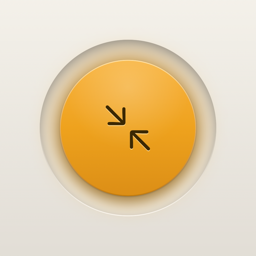
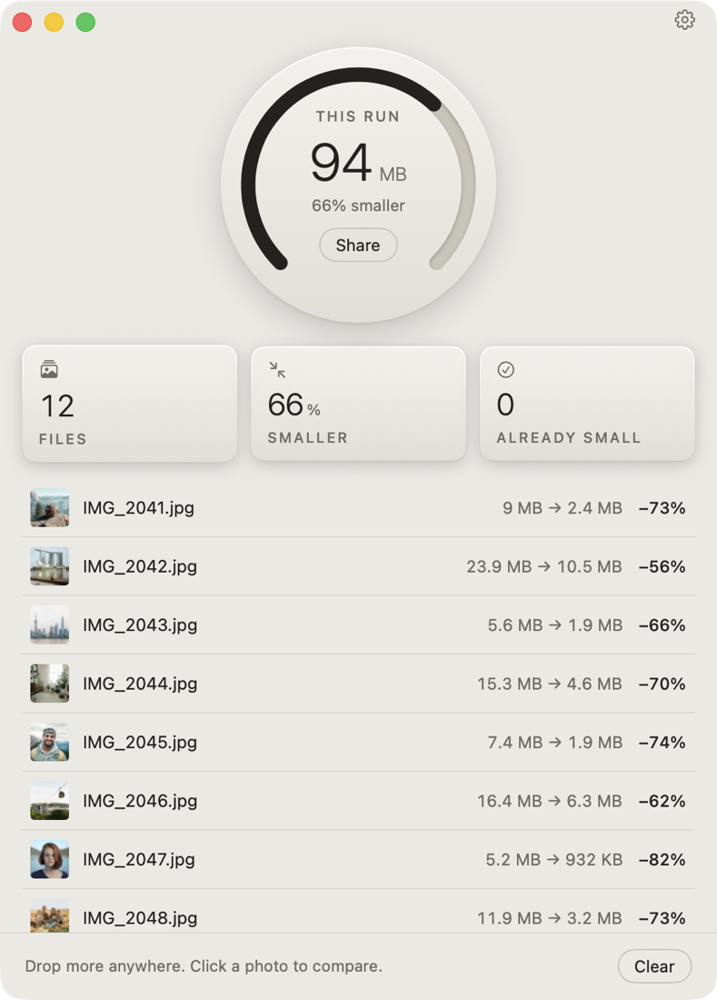
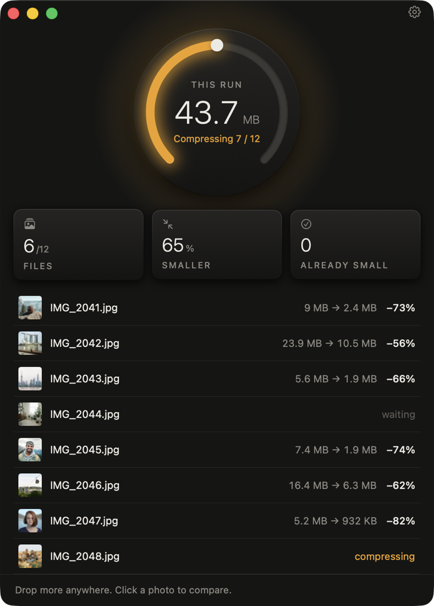
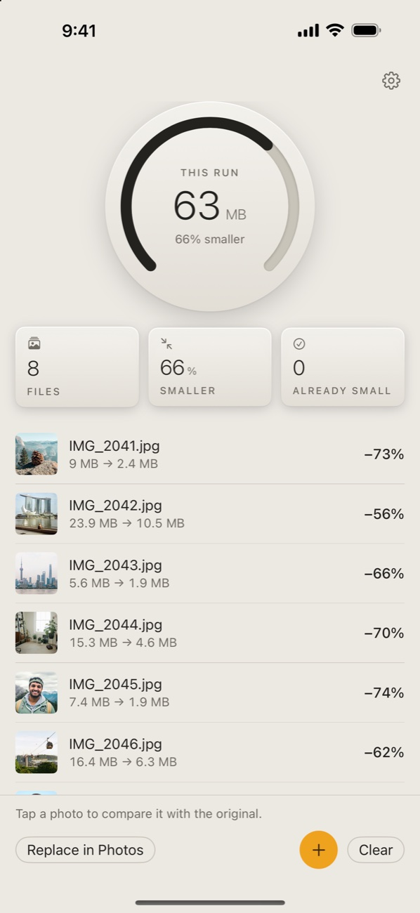
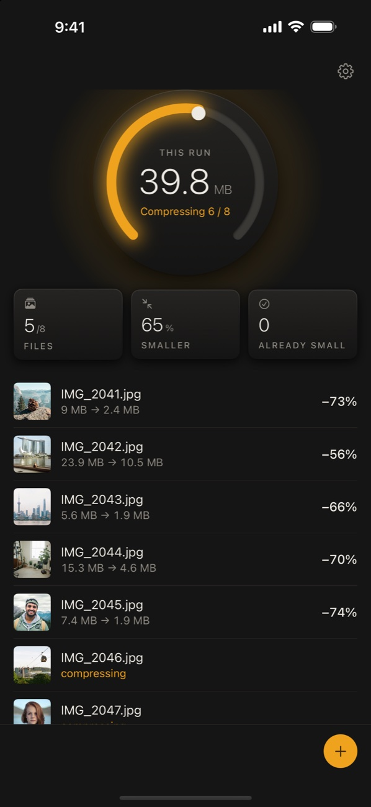

Tyniy shrinks your photos and videos while keeping them visually identical to the originals, so you get your storage back without giving up quality.

Download on the App StoreTyniy for iPhone & iPad100% free. No ads, no subscriptions, no limits. Everything happens on your device.


A 100% crop of a 24-megapixel photo before and after Tyniy. Drag the divider.
Whole-file sizes. For this page both crops were saved the same way, at high JPEG quality. Photo: Unsplash.
Tyniy works out how much each photo can be compressed without a visible change, so you don't have to.
Drop photos or whole folders on the Mac, or pick them on iPhone and iPad from your library or straight from an SD card.
Compression starts right away, several photos at once. Files that can't get meaningfully smaller are left exactly as they are.
The smaller files take the originals' place. The originals go to the Trash or Recently Deleted, so you can restore them. Files on an SD card are overwritten, so Tyniy asks first.
Photos are encoded with jpegli, a modern JPEG encoder that targets what the human eye can actually see.
Replaced originals go to the Trash on the Mac and to Recently Deleted in Photos. On an SD card, Tyniy asks before overwriting.
Camera, lens, date, GPS, orientation and color profiles carry over, so Display P3 and Adobe RGB photos keep their colors.
Optionally convert photos to WebP or AVIF for websites.
Screenshots and graphics shrink a lot while keeping transparency, sharp edges and Retina resolution.
Check any photo side by side with its original and zoom in to the pixel.
New photos and videos in folders you choose, like Desktop or Downloads, are compressed automatically.
Right-click in Finder and choose "Compress with Tyniy", or use the "Compress Files" action in Shortcuts.
No accounts, no uploads, no analytics. Tyniy works completely offline.
Drop files or folders from your Mac, an SD card or an external drive. The dial fills as photos finish.


Pick photos and videos. Tyniy puts the smaller versions in your library with their original date, location, favorites and albums.
Connect your camera's SD card to your iPhone or iPad with a card reader. Tyniy compresses the photos straight from the card, so only the smaller files end up in your library, your laptop or your cloud.
Use any USB-C or Lightning SD card reader. The card shows up in the Files app, with no import needed.
In Tyniy, tap Choose from Files and pick photos or the whole DCIM folder. Tyniy compresses them right away.
Tap Save to Files, then Replace Originals. The smaller files take the originals' place on the card, ready to import.
A card has no Recently Deleted, so Tyniy asks before overwriting anything. Prefer to keep the originals? Save the smaller files to another folder instead. Works with JPEG, HEIC, PNG, MP4 and MOV, and with external SSDs and USB drives too.
Both shrink photos without visible loss. Here's how they differ.
| Tyniy | JPEGmini | |
|---|---|---|
| Price | Free, no limits | From $59 one-time; free tier limited to 50 images a day |
| Platforms | Mac, iPhone and iPad | Mac and Windows |
| Photo formats | JPEG, HEIC and PNG | JPEG and HEIC |
| Output for websites | WebP and AVIF | JPEG |
| Videos | Included | Pro edition ($59) and up |
| Watch folders | Included (Mac) | Pro + Automations edition ($99) |
| On-device | Yes | Yes |
JPEGmini is a trademark of its owner. Based on jpegmini.com/pricing, October 2026.
Free, private and simple. On Mac, iPhone and iPad.